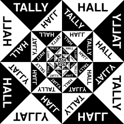
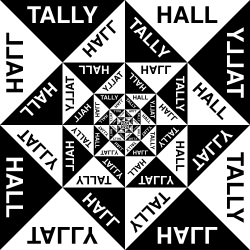

Evan Lands
I exist to exist, nothing more, nothing less... because welcome to my website
The style of this webpage is based off of 'Frutiger Aero' (2004-2014)
Deprived from the 'Y2K problem' (1990's-2000's) aesthetic era.
Frutiger Aero is composed of mashing of technology and nature, reflecting that era's 'Techno-optimismic' ideals of the time. And during this time some of the most user-friendly UI's were made, for some examples Windows 7, Xbox 360, Nintendo Wii and Wii U.
Interests
- Games, like the S.T.A.L.K.E.R. series, Fallout New Vegas, and METRO series "O, zona!"
- Everything music related however NOT County or Rap I hate thoses >:(
- VR
Albums/Music that I like

 
